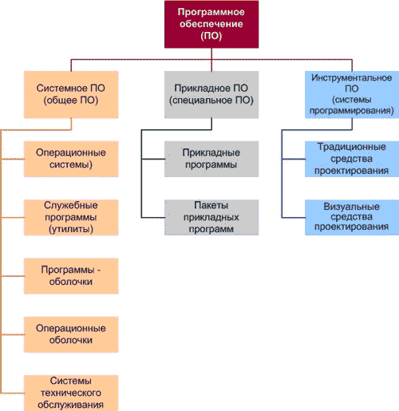
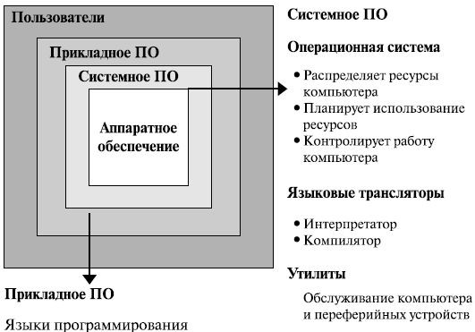
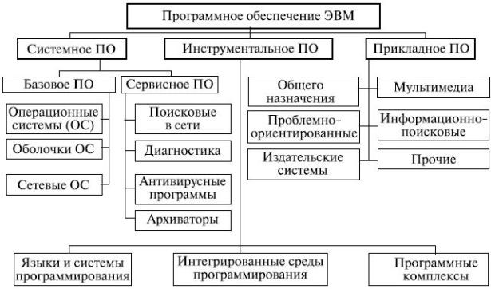

Программное обеспечение – неотъемлемая часть компьютерной системы. Оно является логическим продолжением технических средств. Сфера применения конкретного компьютера определяется созданным для него программным обеспечением. Сам по себе компьютер не обладает знаниями ни в одной области применения. Все эти знания сосредоточены в выполняемых на компьютерах программах. Программное обеспечение современных компьютеров включает миллионы программ – от игровых до научных.
Программное обеспечение, можно условно разделить на три категории:
1. системное ПО (программы общего пользования), выполняющие различные вспомогательные функции, например создание копий используемой информации, выдачу справочной информации о компьютере, проверку работоспособности устройств компьютера и т.д.
2. прикладное ПО, обеспечивающее выполнение необходимых работ на ПК: редактирование текстовых документов, создание рисунков или картинок, обработка информационных массивов и т.д.
3. инструментальное ПО (системы программирования), обеспечивающее разработку новых программ для компьютера на языке программирования.

Рис. 1.
К прикладному программному обеспечению относятся программы, написанные для пользователей или самими пользователями, для задания компьютеру конкретной работы. Программы обработки заказов или создания списков рассылки – примеры прикладного программного обеспечения.
Оба типа программного обеспечения взаимосвязаны и могут быть представлены в виде диаграммы, изображенной на рис.2.1 . Как видно, каждая область тесно взаимодействует с другой.
Системное программное обеспечение обеспечивает и контролирует доступ к аппаратному обеспечению компьютера. Прикладное программное обеспечение взаимодействует с аппаратными компонентами через системное. Конечные пользователи в основном работают с прикладным программным обеспечением. Чтобы обеспечить аппаратную совместимость, каждый тип программного обеспечения разрабатывается для конкретной аппаратной платформы.
Системное программное обеспечение – это набор программ, которые управляют компонентами компьютера, такими как процессор, коммуникационные и периферийные устройства.

Рис. 2.1.Структура и назначение программного обеспечения
Программные системы можно классифицировать по различным признакам. Рассмотрим классификацию, в которой основополагающим признаком является сфера (область) использования программных продуктов:
Для поддержки информационной технологии в этих областях выделяют соответственно три класса программных продуктов, представленных на рис.2.2 :
Системное программное обеспечение (System Software) – совокупность программ и программных комплексов, предназначенная для обеспечения работы компьютера и сетей ЭВМ. Системное программное обеспечение выполняет следующие задачи:

Рис. 2.2.Классы программных продуктов